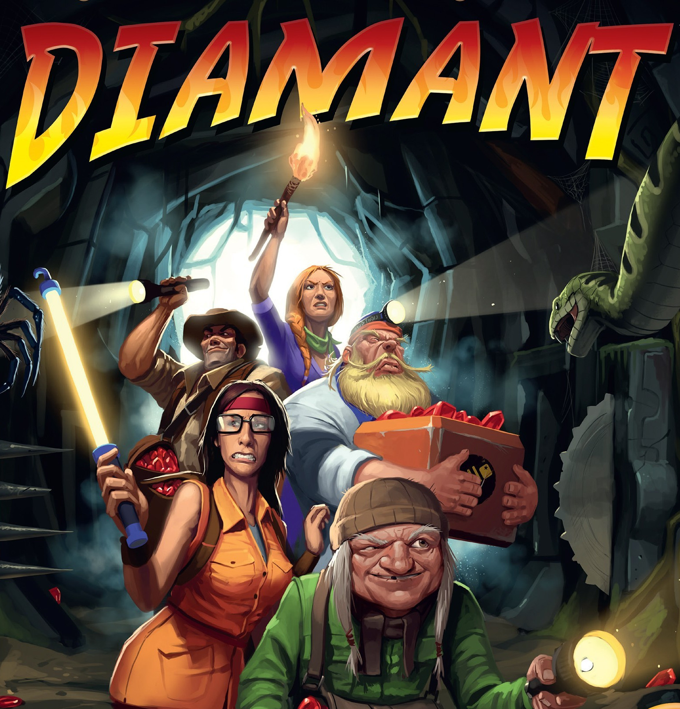

Projets académiques
Classification d'images
Projet ML individuel multi-classes sur images couleur. Comparaison k-NN, régression logistique, réseaux de neurones et CNN. Évalué sur Codabench.
Voir sur GitHub ↗
Jeu de la vie — Conway
Grille bidimensionnelle avec règles de Conway. Architecture orientée objet en C++, rendu graphique SFML.
Voir sur GitHub ↗Morpion avec IA MCTS
Jeu de morpion en Java avec une IA basée sur Monte Carlo Tree Search (MCTS). L'IA explore les coups par simulation aléatoire et sélectionne le meilleur via la formule UCB1. Interface graphique incluse.
Voir sur GitHub ↗
Jeu Diamant
Jeu console inspiré du jeu de société Diamant. IA simulant un joueur, site de présentation en HTML5/CSS3.
Voir sur GitHub ↗